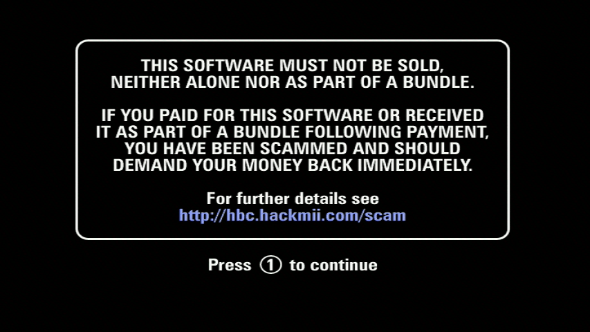
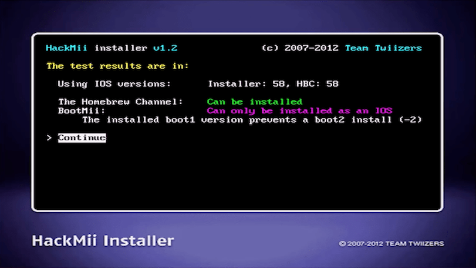
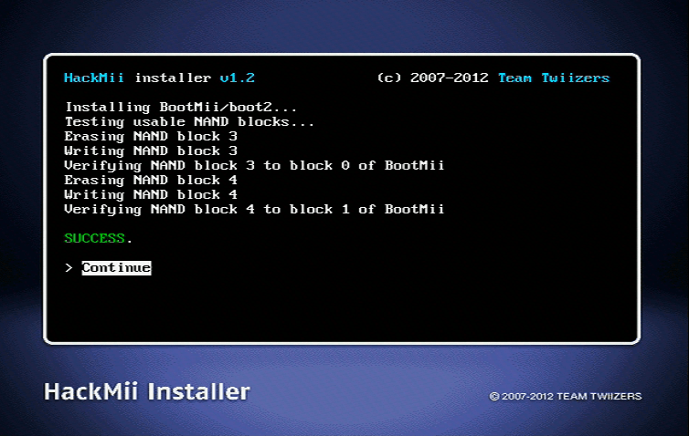

Przejdź do instalacji Homebrew Channel oraz BootMii
Jeżeli potrzebujesz pomocy z czymkolwiek dotyczącym tego poradnika, dołącz do serwera RiiConnect24 na Discordzie (wsparcie dostępne po Polsku!) lub napisz do nas na [email protected].

Teraz możesz użyć kanału Homebrew, by uruchamiać aplikacje Homebrew. Open Shop Channel jest punktem pobierania aplikacji Homebrew, który potem się dowiesz jak tam instalować dalej w tym poradniku.
Instrukcje
-
Zobaczysz ekran, który ostrzega przed oszustwami. Poczekaj 30 sekund na pojawienie się tekstu “Press 1 to continue†oraz naciśnij 1. 
-
Kiedy jesteś w instalatorze HackMii, możesz zainstalować Homebrew Channel oraz BootMii. 
-
Naciśnij kontynuuj oraz wybierz Homebrew Channel, następnie wybierz “Install”.

-
Po ukończeniu, naciśnij na “Continue”.

- Po zainstalowaniu, naciśnij “Back†oraz przejdź do “BootMii”.
- Jeżeli na ekranie wyświetli się informacja o możliwości zainstalowania jako boot2, zrób to. Oferuje to najlepszą możliwą ochronę przed brickiem. Skip this step if the option doesn’t show up, in that case your Wii is not one of the earlier models that supports it.
- Install BootMii as IOS, even if you already installed BootMii as boot2 in the previous step. If you couldn’t install BootMii as boot2, this will still allow you to create a NAND backup.
If you do not have an SD card, you cannot install nor use BootMii, and therefore will not be able to utilize any of the mentioned benefits. Zawsze możesz zainstalować go kiedy indziej.

- Po zakończeniu wybierz
Continue, a następnie wybierzExitaby przejść do Homebrew Channel
Wymagane czytanie
Homebrew Channel jest miejscem, w którym możesz uruchamiać programy homebrew. Open Shop Channel jest punktem pobierania aplikacji Homebrew, który potem się dowiesz jak tam instalować dalej w tym poradniku.
Taka wskazówka - kiedy instalujesz aplikacje Homebrew na twojej karcie pamięci lub dysku USB, twoja struktura folderów powinna wyglądać tak:
NazwaAplikacji1 iNazwaAplikacji2 są nazwami zastępczymi. Nie zagnieżdżaj kilku folderów aplikacji w środku w tym samym folderzeapps.
┃ ┣ 📂 NazwaAplikacji1
┃ ┃ ┣ 📄 icon.png
Tip: You can tell if a Wii has BootMii installed as boot2 if your disc drive flashes very briefly, only after the immediate flash that happens when you press the POWER Button.